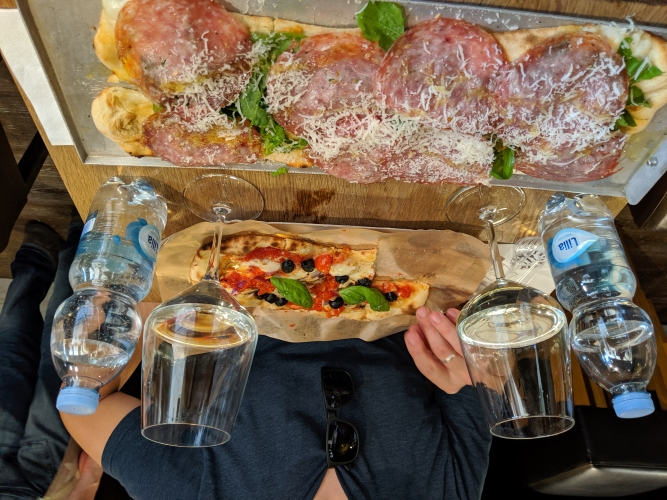

Our first view off the train, welcome to Venice!


Florence was our first main hub while on our trip, and boy did we set the bar high. Florence was my favorite city on the trip (and possibly the world) as it encomposses everything I love about Italy in such a perfect way. Most know that the city embodies The Renaissance but you truly can't understand it until you've been there. From the sights and sounds of the city to the conversations had with locals, our experience there was timeless. we not only hit the usual spots while there, but we also went off the beaten path and had some experiences we will never forget...